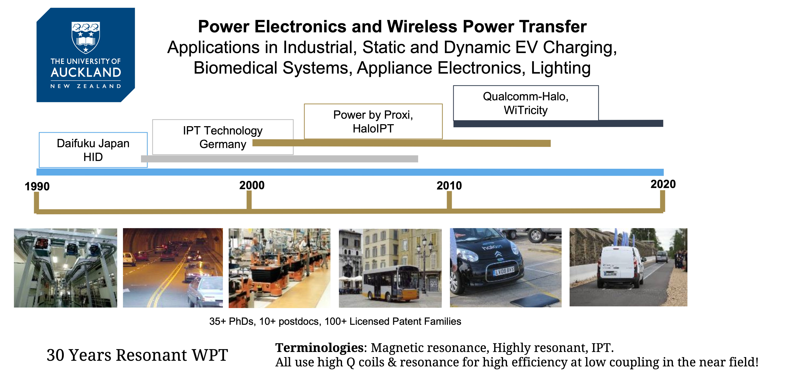
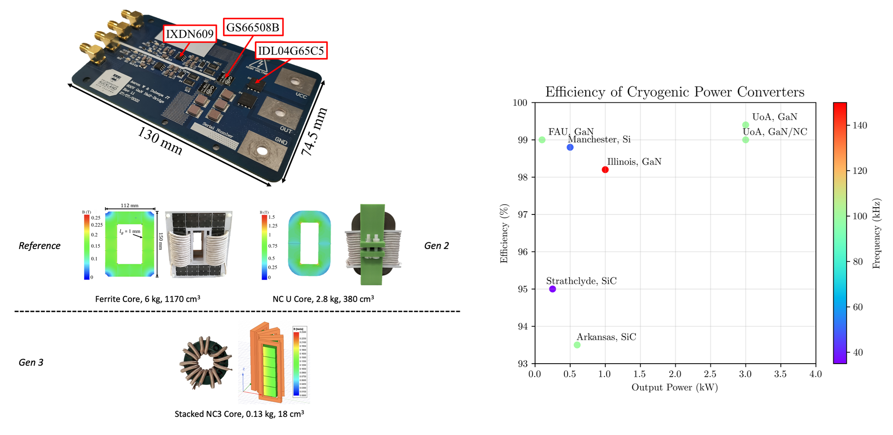
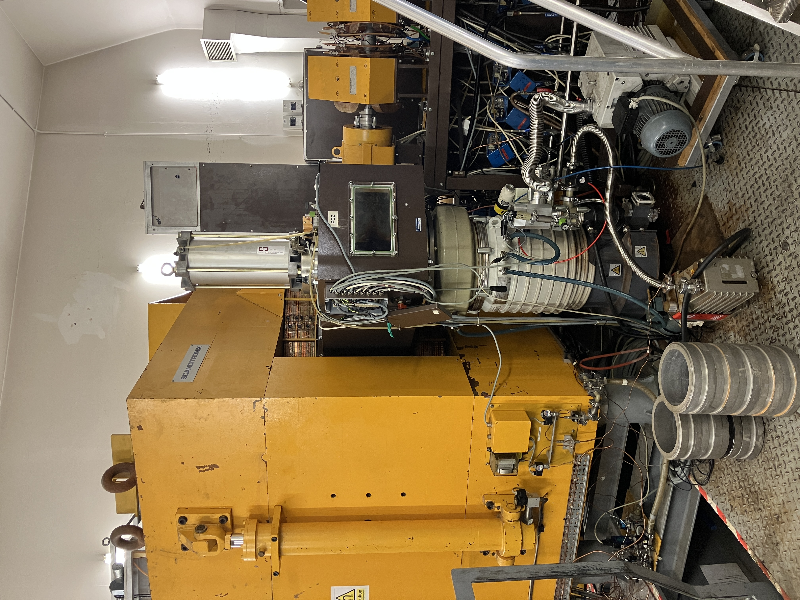
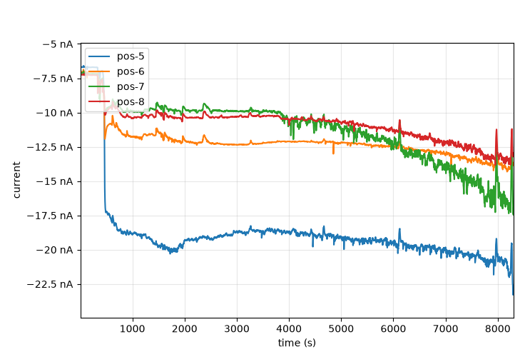
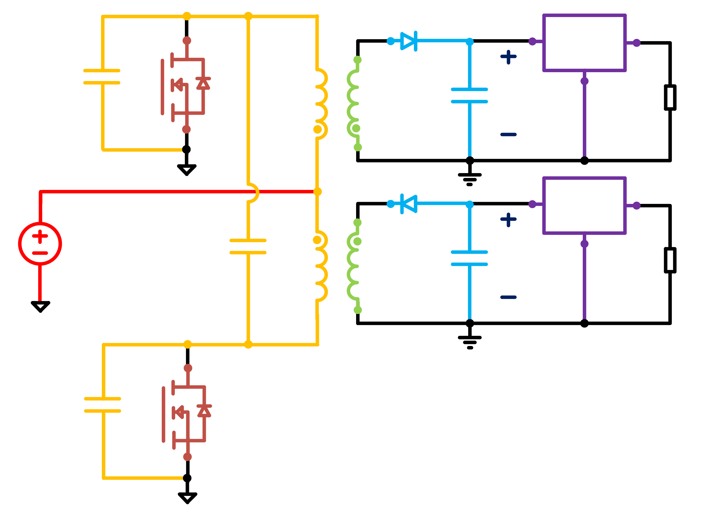
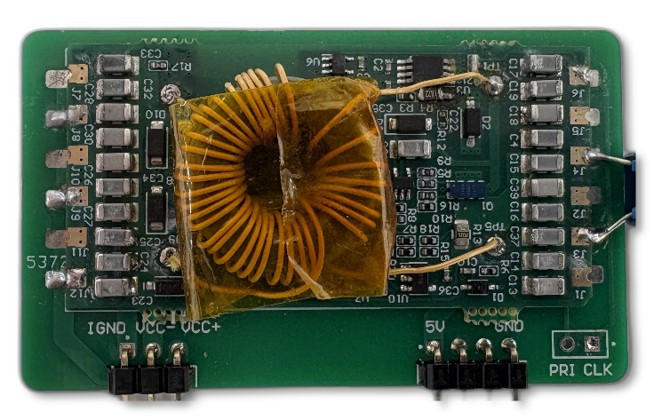
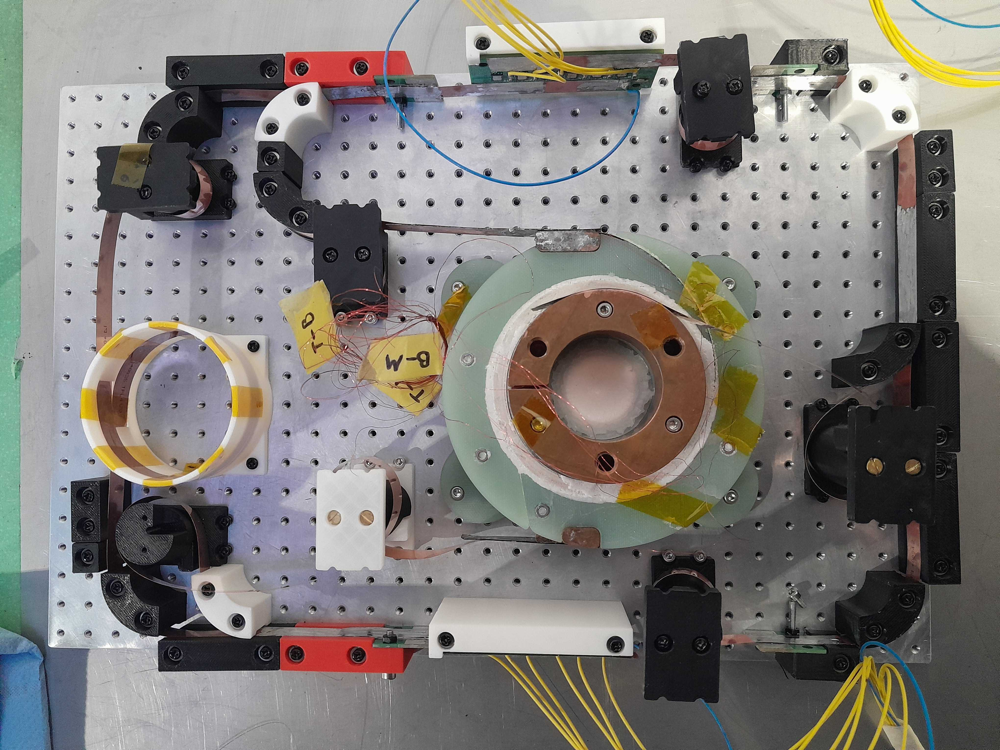
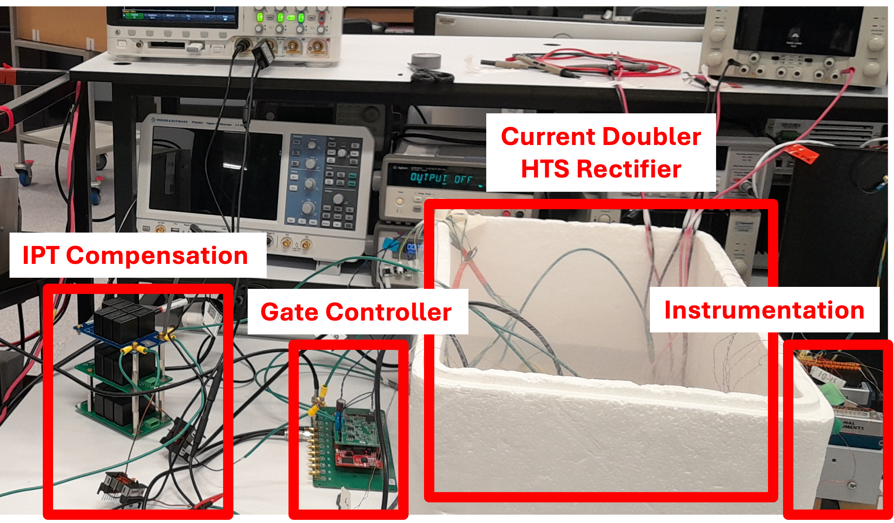
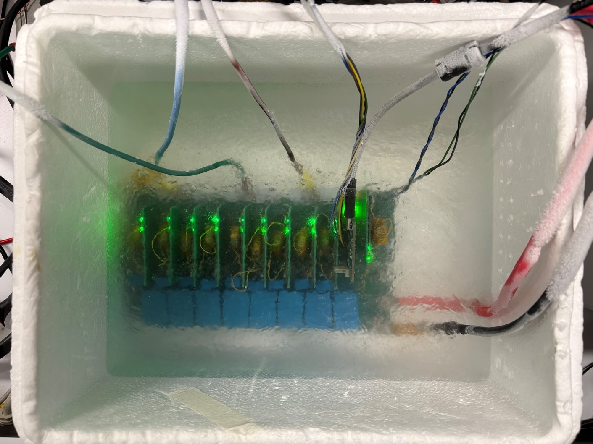

class: title-slide count: false .logo-title[] # Powering the Future ### Cryogenic Power Electronics for Space, Aviation, and Fusion .TitleAuthor[Duleepa J Thrimawithana] --- layout: true name: template_slide .logo-slide[] .footer[[D J Thrimawithana](https://www.linkedin.com/in/duleepajt) and [Aaron Wadsworth](https://www.linkedin.com/in/aaron-wadsworth/), Department of Electrical, Computer, and Software Engineering, The University of Auckland (April 2026)] --- # The JB Wireless Power Technology Center .center[<img src="img/intro/PEGROUP.gif" height="430">] --- # Commercial Successes .center[<p></p>] --- # Where We Are - Our city campus labs are on level 6 and 7 of the Engineering Building (405), while our high power labs are located in the Newmarket campus .center[ ] --- class: title-slide layout: false count: false .logo-title[] # The Advanced Energy Technology Program ### An Overview --- layout: true name: template_slide .logo-slide[] .footer[[D J Thrimawithana](https://www.linkedin.com/in/duleepajt) and [Aaron Wadsworth](https://www.linkedin.com/in/aaron-wadsworth/), Department of Electrical, Computer, and Software Engineering, The University of Auckland (April 2026)] --- name: S1 # Program Overview .center[<img src="img/overview/program.png" height="410px">] --- # National and International Partners .center[<img src="img/overview/colab.png" height="410px">] --- # System Overview .center[<img src="img/overview/system.png" height="410px">] --- name: S19 # GaN Half Bridge and Magnetics .center[<p></p>] --- name: S19 # Driving a Homopolar Machine with HTS Field Winding - A homopolar machine with an HTS field winding has been driven using the 2-level three-phase inverter - Inverter was in LN2 while the motor was inside a vacuum chamber cooled using a cold head - There was an image here but the vacuum got it --- name: S19 # Radiation Testing of GaN HEMTs - Preliminary characterisation of drain leakage under neutron radiation at Birmingham cyclotron facility .center[<p></p><p></p>] --- name: S8 # Ancilary Circuits I - Prototypes of all the critical subsystems needed to build a power electronics system that can operate under cryogenic conditions have been developed and tested - Passives and ICs - Current Sensors - Digital Isolators - OpAmps and Comparators - Voltage References, regulators and Zener Diodes - Capacitors - Custom Built Linear Regulator - Custom Built Resonant Switchers - MCUs and FPGAs - Currently working on miniaturizing the designs and improving the performance of the subsystems --- name: S10 # Ancilary Circuits II .center[<img src="img/ancilary/New_Driver.png" width="20%"><img src="img/ancilary/HallSensor.png" width="20%"><img src="img/ancilary/Isolators.png" width="20%"><img src="img/ancilary/OpAmps.png" width="20%">] .center[<img src="img/ancilary/Linear.png" width="20%"><p></p><p></p><img src="img/ancilary/RP2040.jpg" width="20%">] --- # Resistance of Cu Traces/Interconnects - The contribution of the solder joints and PCB traces to overall D-S resistance have been investigated - A 2 Oz PCB contributes rougly 200 uOhms at RT and 22 uOhms at CT - Contribution of solder joints and trace resistance is however significant for smaller devices, specially GaNs .center[<img src="img/fluxpump/SolderJoints.png" height="300px">] --- # Solid State Flux Pump with Aircore Transformer - A 200A solid-state flux pump was developed to measure the critical current of an HTS tape - 8 ultra-low Rds on Si FET was used to rectify while keeping the losses low .center[<p></p> <p></p>] --- name: S19 # Fully Cryogenic Motor Driver - The T-Type converter operated at 77K was confirgured to drive an axial flux machine - Initial testing upto 400V/10kW completed - First fully cryogenic motor drive reported to-date - All ancillary circuits and digital controller operated in the cryogenic enviroment .center[<p></p> <img src="img/t-type/All_Cryo_2.jpg" height="300px">] --- name: S19 # Conclusions and Observations - Cryoelectronics is in-demand for applications such as aviation, space exploration, nuclear fusion, future circular collider, etc. - Long haul commercial flights will most likely require LH2 as a fuel - Has sufficient thermal capacity to cool the electronics - Developing a cryoelectronic converter seems possible with current device technology - GaN device with Schottky p-GaN gates seems to be the most promising switching technology - CMOS logic devices works well in cryogenic temperatures - Nanocrystalline materials offer good performance - Film capacitors and NP0/C0G capacitors works well - Operating at lower temperature offers some advantages - Improved power density, possible higher efficiency and less heat leakage --- name: S19 # Research Challenges - Fully cryogenic power conversion system - We are in the process of developing a new generation of our GaN HEMT based power conversion modules, with integrated isolation, protection, ancillary services and digital control - Conduction cooling the converters - We are investigating new designs that enable conduction cooling for a power conversion system in a vacuum chamber using a cold head - Reliability of components and further component characterization - Further investigation on failure modes, cold starts, impact of thermal cycling, thermal shock, thermal gradients, mechanical stresses introduced by encapsulating materials, etc. - Radiation hardness of cryo-cooled GaN HEMTs (possible collaboration with Airbus and STM) - Driving a fully HTS machine - Challenges involved in minimizing AC losses, insulation breakdown, low winding inductance, EMI, etc. - We are investigating some novel approaches to solve some of these issues --- class: title-slide layout: false count: false .logo-title[] # Thank You